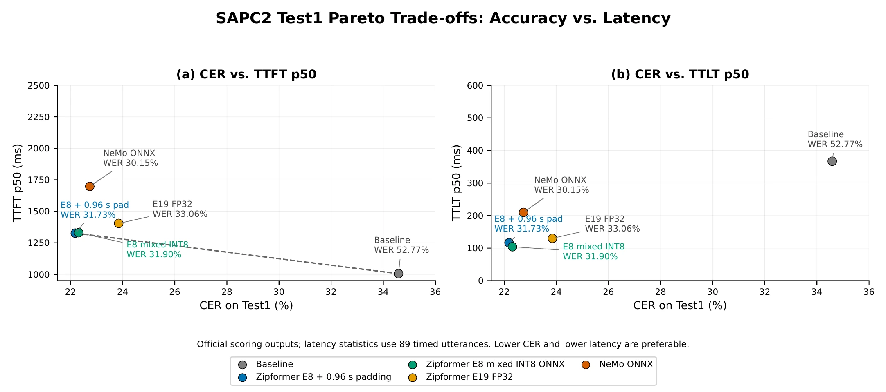
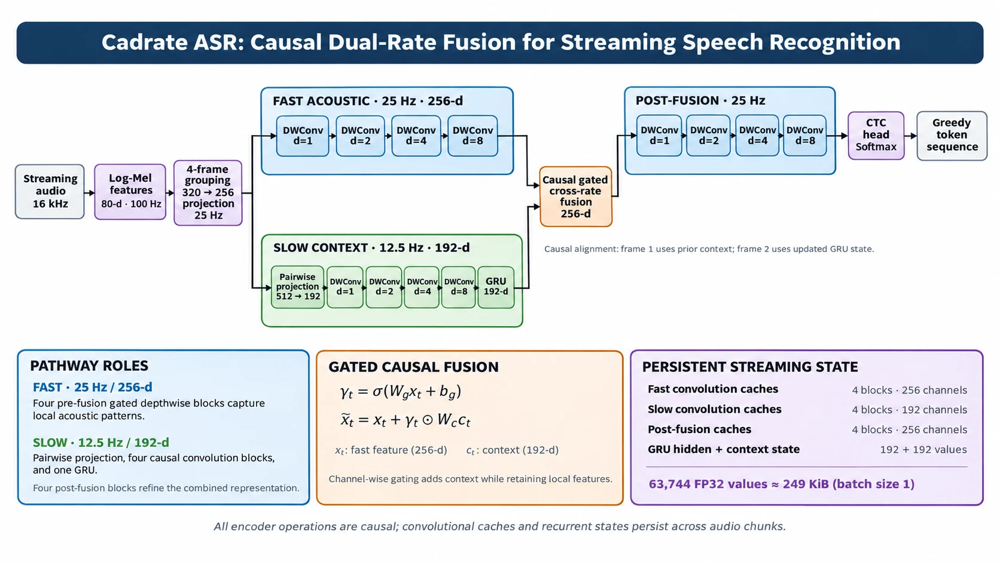

TL;DR
We fine-tuned a compact 66.1M-parameter causal Zipformer for dysarthric speech and ran it on CPU in 100-ms chunks as mixed-precision INT8 ONNX. On the official SAPC2 Test1 leaderboard it reaches 22.18% CER and 31.73% WER, against the baseline's 34.59% CER, with a 1.38 s median stable first token and a 117 ms last-token delay.
Two further findings: recognition errors follow how clear the speech sounds at least as closely as the speaker's diagnosis, and Cadrate ASR, our 2.70M-parameter dual-rate CNN–GRU, runs faster on CPU but needs pretraining before its speed is worth anything.
Dysarthria is a motor speech disorder linked to Parkinson's disease, cerebral palsy, ALS, Down syndrome and stroke. Speech becomes slurred, slow or irregular, and it varies from speaker to speaker and even within one utterance. Recognizers trained on typical voices break down.
The strongest systems from the 2025 Speech Accessibility Project Challenge used large offline models such as Parakeet-TDT 1.1B and Whisper large-v3 on GPUs. They see the whole utterance before answering. Real-time captioning or voice control cannot wait for that. A streaming recognizer has to emit text from short audio chunks, with no future context, on modest hardware, and the text it shows should not keep changing under the reader.
This page describes our system for Track 2 of the Speech Accessibility Project Challenge 2 (SAPC2), what we learned about where streaming recognizers fail on dysarthric speech, and a small prototype, Cadrate ASR, that tests how far CPU cost can be pushed down.
Audio arrives in 100-ms chunks. The transcript has to settle while the speaker is still talking.
Transcript at 0.00 s
settledmay still be revised
Streaming ASR under SAPC2 Track 2
In Track 2, systems receive audio in 100-ms chunks and must run strictly on CPU. They are judged on accuracy and on responsiveness:
| Metric | What it measures |
|---|---|
| CER / WER | Character and word error rate |
| TTFT-stable | Time until the first word that never changes afterwards |
| TTLT | Delay of the final token after the audio ends |
Raw speed, such as real-time factor, is not the same as responsiveness a user can feel. How long tokens take to appear, whether partial hypotheses stay put, and how quickly the end is detected all matter too.
Method
One pipeline takes the data to a CPU-streaming model, and all of it was trained on a single consumer GPU.
- SAPC2 data. 336,075 training utterances (742.72 h, 875 speakers), plus 41.8k TTS clips, TORGO and a 6-stage acoustic augmentation.
- Text and vocabulary. Disfluency-free normalized targets; BPE vocabulary grown from 500 to 510 tokens.
- Adaptation. Causal Zipformer fine-tuned with random 16–32 frame chunks and SpecAugment.
- ONNX export. Graph optimization; INT8 encoder and joiner, FP32 predictor.
- CPU streaming. sherpa-onnx with 100-ms chunks; greedy or 4-path beam search.
- Evaluation. WER and CER, TTFT-stable and TTLT, plus a perceptual audit.
Data and augmentation
| Source | Utterances | Hours | Speakers | Notes |
|---|---|---|---|---|
| SAPC2 Train | 336,075 | 742.72 | 875 | PD 311, CP 167, ALS 167, DS 145, stroke 85 |
| SAPC2 Dev | 47,929 | 106.62 | 124 | No speaker overlap with train |
| Synthetic TTS (Qwen, Kokoro) | 41,850 | — | — | Timing, channel and volume perturbations |
| TORGO + 6-stage augmentation | suppl. | — | — | Noise, stretch, pitch, low-pass, echo, reverb |
Because train and dev share no speakers, every evaluation is on voices the model has never heard. Most recordings (82%) are under 10 s; ALS speakers produce the longest utterances (8.97 s on average) and speakers with Down syndrome the shortest (6.73 s). About 68% of training files repeat voice-assistant commands such as “Hey Google”, each spoken more than 2,100 times. We trained on 88,694 unique normalized text targets.
To separate channel degradation from dysarthric articulation, a 6-stage pipeline cascades Gaussian noise (σ = 0.02), a 0.9× time stretch, a +2 semitone pitch shift, a 4 kHz Butterworth low-pass filter, a single-tap echo and a five-tap reverb.
Vocabulary transplantation: 500 → 510 tokens
The normalized transcripts contain numerals that the base BPE vocabulary splits awkwardly. We appended the ten digits as new tokens. The original 500 embedding and joiner rows stay untouched, so pretrained knowledge is not overwritten, and the new rows start from scaled Gaussian noise with zero bias.
Fine-tuning and CPU deployment
The base model is a pretrained streaming Zipformer RNN-T (~66.1M parameters, Icefall). Its multi-rate causal encoder runs stacks at 50, 25, 12.5, 6.25, 12.5 and 25 Hz over 80-dimensional log-Mel features with no lookahead; the low-rate middle stacks make long context cheap.
| Hardware | 1× NVIDIA RTX 4070 (12 GB), FP16 mixed precision |
|---|---|
| Learning rate | 3 × 10−5 |
| Batching | Dynamic, up to 120 s of audio per batch |
| Chunks | Random 16–32 frames; left context 128 or 256 frames |
| Epochs | 19, with epoch 19 (E19) selected |
| Export | ONNX; INT8 dynamic quantization on encoder and joiner, FP32 predictor |
| Runtime | sherpa-onnx, 100-ms chunks, greedy (official) or 4-path beam with 0.96–1.28 s tail padding |
Results
Does a compact causal transducer beat the baseline under strict CPU streaming?
Yes, by a wide margin. On the official leaderboard our greedy INT8 submission lowers CER by 12.41 points and WER by 21.04 points, and finishes 3.1× sooner after the audio ends.
| System (CPU, 100-ms chunks) | WER (%) | CER (%) | TTFT-stable | TTLT |
|---|---|---|---|---|
| SAPC2 Track 2 baseline | 52.77 | 34.59 | — | 367 ms |
| Ours: Zipformer INT8, greedy | 31.73 | 22.18 | 1.38 s | 117 ms |
What does adaptation buy over off-the-shelf and offline models?
Offline models do well with the whole utterance in view, but run slower than real time on CPU and fail the streaming harness. The pretrained streaming Zipformer meets the constraints but starts at 58.20% WER. Domain fine-tuning cuts that roughly threefold.
| System | Split | WER (%) | CER (%) | CPU |
|---|---|---|---|---|
| Offline, full-utterance context | ||||
| Whisper Large-v3, zero-shot | Dev | 36.56 | 15.34 | RTF > 1.0 |
| Parakeet RNN-T, fine-tuned | Dev | 22.22 | 9.67 | RTF > 1.0 |
| Streaming, 100-ms chunks | ||||
| Zipformer, pretrained, zero-shot | Dev-501 | 58.20 | 34.91 | — |
| Zipformer, fine-tuned (validation) | Dev-501 | 27.48 | 18.90 | — |
| Zipformer E19 INT8, greedy | Dev-501 | 21.74 | — | 140 s total |
| Zipformer E19 INT8, beam-4 | Dev-501 | 19.47 | 12.59 | 157 s total |
Beam-search results are local only; the leaderboard submission used greedy decoding.
Can decoding alone improve accuracy without hurting latency?
Switching from greedy to 4-path beam search lowers WER by 2.55 points for only 17 s more total decode time. INT8 beam-4 runs 2.9× faster than FP32 beam-4 and is slightly more accurate. Wider beams take 7–10× longer for no gain, blank penalties hurt, and 1.28 s of tail padding stops prolonged dysarthric syllables from being cut off.

| Configuration | WER (%) | CER (%) | Total decode time |
|---|
Where errors come from
Does the diagnosis explain the errors, or does how the speech sounds?
Both matter, and perceived clarity matters at least as much. By etiology, our Zipformer does best on Parkinson's disease and ALS, where articulation stays relatively stable, and worst on cerebral palsy and Down syndrome. We then audited 437+ recordings from the 501-utterance set by ear for clarity, articulation, fluency and rate. WER climbs from 19.30% on clear speech to 57.28% on unclear speech, and our model beats both unadapted baselines by 15–44 WER points in every category.
- Zipformer E19 (ours)
- FastConformer
- Nemotron INT4
Show as a table, including rare categories
| Characteristic | n | Ours WER | Ours CER | FC WER | FC CER | Nem. WER | Nem. CER |
|---|
Is a fast first token the same as a usable transcript?
No. On a separate 57-recording set, every off-the-shelf model scored 67.78–74.71% WER before adaptation. Moonshine Tiny emits its first token in 62 ms, but its first stable word arrives after about 3 seconds. A transcript that keeps flickering does not help someone reading it, which is why we report TTFT-stable rather than first-token latency.
| Off-the-shelf model (ms from start of audio) | First output | Stable | TTLT |
|---|---|---|---|
| Moonshine Tiny | 62 | 2,986 | 671 |
| Moonshine Small | 124 | 4,252 | 3,325 |
| Moonshine ONNX | 2,336 | 2,736 | 131 |
| Off-the-shelf Zipformer | 2,495 | 2,906 | 546 |
Cadrate ASR
How small can a streaming encoder get before accuracy collapses?
Cadrate ASR is a 2.70M-parameter causal model, 25× smaller than our Zipformer, trained from scratch to probe the lower limit of CPU compute and state memory. It stacks four 100 Hz filterbank frames into a 25 Hz fast acoustic pathway (256 channels; gated depthwise dilated convolutions with kernel 7 and dilations 1, 2, 4, 8). Alongside runs a 12.5 Hz slow context pathway (192 channels; four causal convolution blocks and a unidirectional GRU). A sigmoid-gated fusion feeds the slow context back into the fast pathway without breaking causality, and a framewise CTC head decodes greedily.

The fusion gate decides, channel by channel, how much slow context to add to each fast frame:
Odd and even fast frames read the previous and current GRU state, c2j−1 = hj−1 and c2j = hj, so no frame sees context from its future. With no attention cache, the persistent state is fixed:
| Adapted Zipformer | Cadrate ASR | |
|---|---|---|
| Encoder | Multi-rate causal Transformer, 6 stacks | Dual-rate causal depthwise CNN–GRU |
| Frame rates | 50, 25, 12.5, 6.25, 12.5, 25 Hz | 25 Hz fast, 12.5 Hz slow |
| Cross-rate path | Down/upsampling, bypasses | Causal gated additive fusion |
| Objective | Pruned RNN-T, greedy or beam-4 | Framewise CTC, greedy |
| Inference state | Attention caches + RNN-T predictor | Fixed 249 KiB conv/GRU caches |
| Parameters | ~66.1M, pretrained + fine-tuned | ~2.70M, from scratch |
What worked
- Lower CPU real-time factor than the Zipformer
- Lower P95 chunk latency
- Fixed 249 KiB state with 25× fewer parameters
What fell short
- Trained from scratch on SAPC2 only
- High WER; did not generalize to unseen speakers
Low compute is only useful once accuracy crosses a practical threshold. Very fast architectures still need large-scale pretraining, so a pretrained Cadrate is the natural next step.
What comes next?
Four lessons stood out:
- Adaptation matters more than size. A 66.1M-parameter causal model adapted to dysarthric speech beat every unadapted streaming baseline we tried: FastConformer, Nemotron INT4 and Moonshine v2.
- Accuracy and stability pull apart. Beam search lowers WER but revises partial hypotheses as chunks arrive. A slightly slower transcript that stays put often helps a user more than an instant one that flickers.
- Speed cannot replace pretraining. INT8 ONNX streams smoothly on CPU, but a tiny model trained from scratch does not generalize to new speakers.
- Diagnoses hide differences in clarity. WER follows perceived clarity (19% vs. 57%) as closely as diagnosis, so perceptual benchmarks belong alongside clinical ones.
Next, we want recognition that holds up on unclear, slurred and imprecise speech; lower latency to stable output, not just to the first token; lightweight models, starting with a pretrained Cadrate, that generalize to unseen speakers; and perceptual benchmarks that sit alongside clinical etiology.
Limitations
We did not ablate TTS data, TORGO or vocabulary expansion separately. Decoding settings were tuned on the development set we report, and beam-search gains are local, not on the leaderboard. Results are single-run point estimates without confidence intervals, some perceptual subgroups are small, and the perceptual tags are subjective author annotations. Cadrate ASR is exploratory. Scope is English SAPC2 data, which cannot be redistributed.
Selected references
- Zipformer: A Faster and Better Encoder for Automatic Speech Recognition [arXiv]
Yao, Z., Guo, L., Yang, X., Kang, W., Kuang, F., Yang, Y., Jin, Z., Lin, L. and Povey, D., 2024. ICLR. - Community-Supported Shared Infrastructure in Support of Speech Accessibility
Hasegawa-Johnson, M. et al., 2024. Journal of Speech, Language, and Hearing Research 67(11). - The Interspeech 2025 Speech Accessibility Project Challenge
Zheng, X. et al., 2025. Interspeech. - icefall: speech recognition recipes [link] and sherpa-onnx [link]
k2-fsa contributors. - Tokenizer Transplantation: Mitigating Autoregressive Collapse in Edge-Efficient Bengali ASR [arXiv]
Hasan, S. and Rahman, M. A., 2026. MusIML Workshop, ICML. - Make it Hard to Hear, Easy to Learn: Long-Form Bengali ASR and Speaker Diarization via Extreme Augmentation and Perfect Alignment [arXiv]
Hasan, S., Labib, R., Fuad, A. H. M. and Hasan, B., 2026. - SpecAugment: A Simple Data Augmentation Method for Automatic Speech Recognition [arXiv]
Park, D. S. et al., 2019. Interspeech. - Sequence Transduction with Recurrent Neural Networks [arXiv]
Graves, A., 2012. - The TORGO Database of Acoustic and Articulatory Speech from Speakers with Dysarthria
Rudzicz, F., Namasivayam, A. K. and Wolff, T., 2012. Language Resources and Evaluation 46. - Moonshine v2: Ergodic Streaming Encoder ASR for Latency-Critical Speech Applications [arXiv]
Kudlur, M., King, E., Wang, J. and Warden, P., 2026. - Dissecting User-Perceived Latency of On-Device E2E Speech Recognition
Shangguan, Y., Li, J., Liang, Q., Alvarez, R. and McGraw, I., 2021. Interspeech. - Fine-Tuning Parakeet-TDT for Dysarthric Speech Recognition in the Speech Accessibility Project Challenge
Takahashi, K. et al., 2025. Interspeech.
The full reference list is in the paper.
Citation
Please cite this work as
Sanjid Hasan, Zaina Rahman, Suhita Islam Aurthi, Md Rashaduzzaman Rakib, Sadia Jahan Turabe, and Md. Wasif Rahman. “Beyond Recognition Accuracy: Efficient CPU Streaming ASR for Dysarthric Speech.” Speech Accessibility Project Challenge 2, Track 2, 2026.
or in BibTeX
@misc{hasan2026beyond,
title = {Beyond Recognition Accuracy: Efficient {CPU} Streaming {ASR}
for Dysarthric Speech},
author = {Hasan, Sanjid and Rahman, Zaina and Aurthi, Suhita Islam and
Rakib, Md Rashaduzzaman and Turabe, Sadia Jahan and
Rahman, Md. Wasif},
year = {2026},
note = {Speech Accessibility Project Challenge 2, Track 2 (Streaming ASR)},
url = {https://sanjidh090.github.io/Cadrate-ASR/}
}